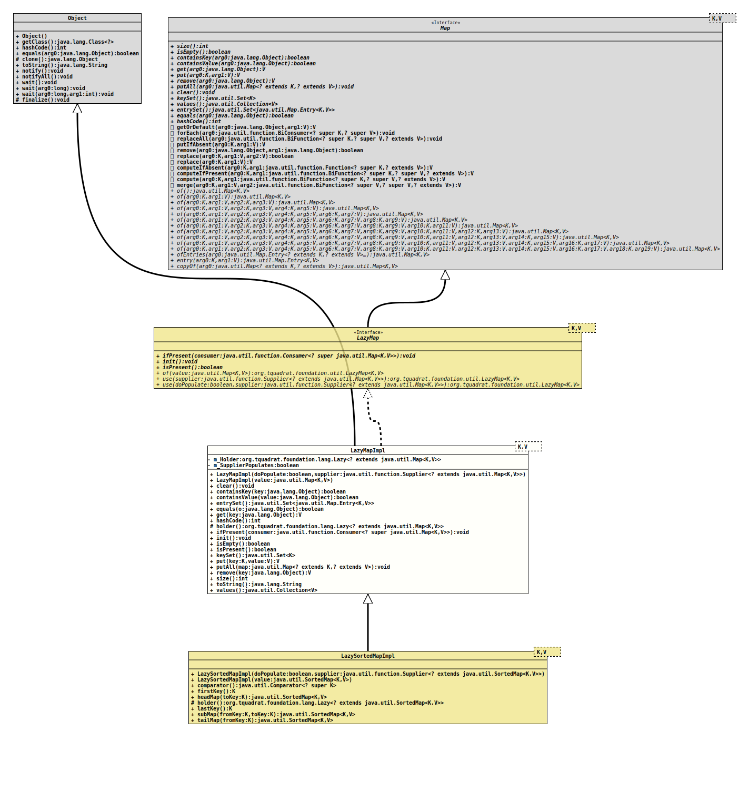

Module org.tquadrat.foundation.util
Class LazyMapImpl<K,V>
java.lang.Object
org.tquadrat.foundation.util.internal.LazyMapImpl<K,V>
- Type Parameters:
K- The type of keys maintained by this mapV- The type of mapped values
- Direct Known Subclasses:
LazySortedMapImpl
@ClassVersion(sourceVersion="$Id: LazyMapImpl.java 1060 2023-09-24 19:21:40Z tquadrat $")
@API(status=INTERNAL,
since="0.0.5")
public sealed class LazyMapImpl<K,V>
extends Object
implements LazyMap<K,V>
permits LazySortedMapImpl<K,V>
The implementation for
LazyMap.- Author:
- Thomas Thrien (thomas.thrien@tquadrat.org)
- Version:
- $Id: LazyMapImpl.java 1060 2023-09-24 19:21:40Z tquadrat $
- Since:
- 0.0.5
- UML Diagram
-

UML Diagram for "org.tquadrat.foundation.util.internal.LazyMapImpl"
{kind=link}
-
Nested Class Summary
-
Field Summary
Fields -
Constructor Summary
ConstructorsConstructorDescriptionLazyMapImpl(boolean doPopulate, Supplier<? extends Map<K, V>> supplier) Creates a newLazyMapImplinstance.LazyMapImpl(Map<K, V> value) Creates a newLazyMapImplinstance that is initialised with the given value. -
Method Summary
Modifier and TypeMethodDescriptionfinal voidclear()final booleancontainsKey(Object key) final booleancontainsValue(Object value) entrySet()final booleanfinal Vfinal inthashCode()holder()Gives access to the internalLazyinstance for derived classes.voidIf thisLazyMapinstance has been initialised already, the providedConsumerwill be executed; otherwise nothing happens.final voidinit()Forces the initialisation of thisLazyMapinstance.final booleanisEmpty()final booleanChecks whether thisLazyMapinstance has been initialised already.keySet()final Vfinal voidfinal Vfinal intsize()final StringtoString()final Collection<V> values()Methods inherited from class java.lang.Object
clone, finalize, getClass, notify, notifyAll, wait, wait, waitMethods inherited from interface java.util.Map
compute, computeIfAbsent, computeIfPresent, forEach, getOrDefault, merge, putIfAbsent, remove, replace, replace, replaceAll
-
Field Details
-
m_Holder
The holder for the real map. -
m_SupplierPopulates
The flag that indicates whether the provided supplier will put values to the list on initialisation.
-
-
Constructor Details
-
LazyMapImpl
Creates a newLazyMapImplinstance.- Parameters:
doPopulate-trueif the provided supplier will put values to the map on initialisation,falseif it will create an empty map.supplier- The supplier that initialises the internal map for this instance when it is first needed.
-
LazyMapImpl
Creates a newLazyMapImplinstance that is initialised with the given value.- Parameters:
value- The initialisation value.
-
-
Method Details
-
clear
-
containsKey
- Specified by:
containsKeyin interfaceMap<K,V>
-
containsValue
- Specified by:
containsValuein interfaceMap<K,V>
-
entrySet
-
equals
-
get
-
hashCode
-
holder
Gives access to the internalLazyinstance for derived classes.- Returns:
- A reference to
m_Holder.
-
ifPresent
If thisLazyMapinstance has been initialised already, the providedConsumerwill be executed; otherwise nothing happens. -
init
Forces the initialisation of thisLazyMapinstance. -
isEmpty
-
isPresent
Checks whether thisLazyMapinstance has been initialised already. -
keySet
-
put
-
putAll
-
remove
-
size
-
toString
-
values
-